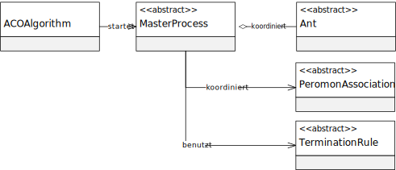

Package eu.andredick.aco.masterprocess
Class MasterProcessBasic
- java.lang.Object
-
- eu.andredick.aco.masterprocess.AbstractMasterProcess
-
- eu.andredick.aco.masterprocess.MasterProcessBasic
-
public class MasterProcessBasic extends AbstractMasterProcess
Masterprozess-Basic - Grundausprägung der Komponente des Masterprozesses
Kapitel 3.3.2, S. 26, Masterprozess
Die Implementierung des Masterprozess bildet den übergeordneten Ablauf der ACO-Metaheuristik ab,
indem die Initiirung und Evaporation des Pheromons (sieheAbstractPheromoneAssociation)
und die Population der Ameisen (sieheAbstractAnt) koordiniert wird.
Ablauf:
1 - Initiierung des Pheromons
2 - Konstruktion der Lösungen aller Ameisen
3 - Lokale Suche auf konstruierten Lösungen aller Ameisen
4 - Evaporation des Pheromons
5 - Markierung des Pheromons durch alle Ameisen
6 - Zurücksetzen der Ameisengedächtnisse
7 - Zurück zu 2., wenn Abbruchbedingungen nicht erfüllt.
Ein Masterprozess wird imACOAlgorithmverwendet und dort gestartet.

-
-
Field Summary
-
Fields inherited from class eu.andredick.aco.masterprocess.AbstractMasterProcess
ants, pheromoneStructure, statistics, termCriterion
-
-
Constructor Summary
Constructors Constructor Description MasterProcessBasic(AbstractPheromoneAssociation pheromoneStructure, AbstractAnt[] ants, AbstractTerminationCriterion termCriterion)Konstruktor
-
Method Summary
All Methods Instance Methods Concrete Methods Modifier and Type Method Description voidstart()Logik des Masterprozeess-Basic
Ablauf:
1 - Initiierung des Pheromons
2 - Konstruktion der Lösungen aller Ameisen
3 - Lokale Suche auf konstruierten Lösungen aller Ameisen
4 - Evaporation des Pheromons
5 - Markierung des Pheromons durch alle Ameisen
6 - Zurücksetzen der Ameisengedächtnisse
7 - Zurück zu 2., wenn Abbruchbedingungen nicht erfüllt.-
Methods inherited from class eu.andredick.aco.masterprocess.AbstractMasterProcess
getStatistics
-
-
-
-
Constructor Detail
-
MasterProcessBasic
public MasterProcessBasic(AbstractPheromoneAssociation pheromoneStructure, AbstractAnt[] ants, AbstractTerminationCriterion termCriterion)
Konstruktor- Parameters:
pheromoneStructure- Pheromonassoziation mit dem zu lösnden AbstractProblemants- Population der AmeisentermCriterion- Abbruchkriterium für die Iteration
-
-
Method Detail
-
start
public void start()
Logik des Masterprozeess-Basic
Ablauf:
1 - Initiierung des Pheromons
2 - Konstruktion der Lösungen aller Ameisen
3 - Lokale Suche auf konstruierten Lösungen aller Ameisen
4 - Evaporation des Pheromons
5 - Markierung des Pheromons durch alle Ameisen
6 - Zurücksetzen der Ameisengedächtnisse
7 - Zurück zu 2., wenn Abbruchbedingungen nicht erfüllt.- Specified by:
startin classAbstractMasterProcess
-
-